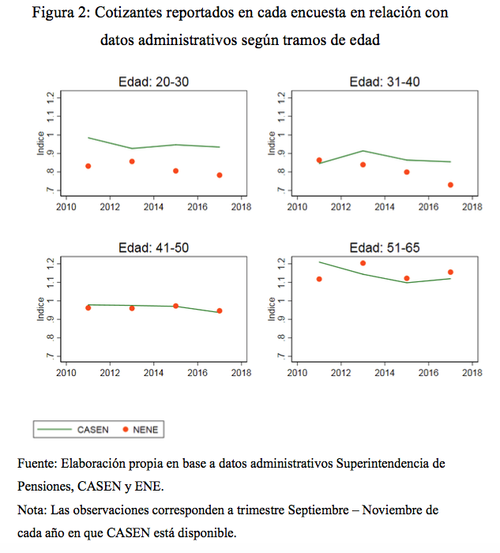
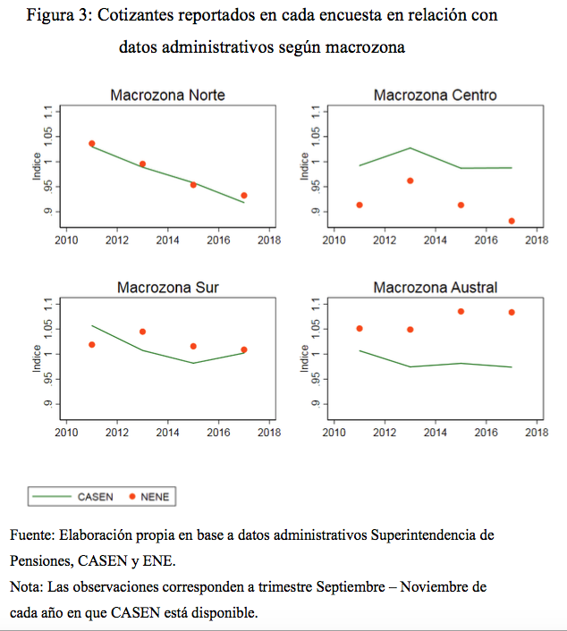
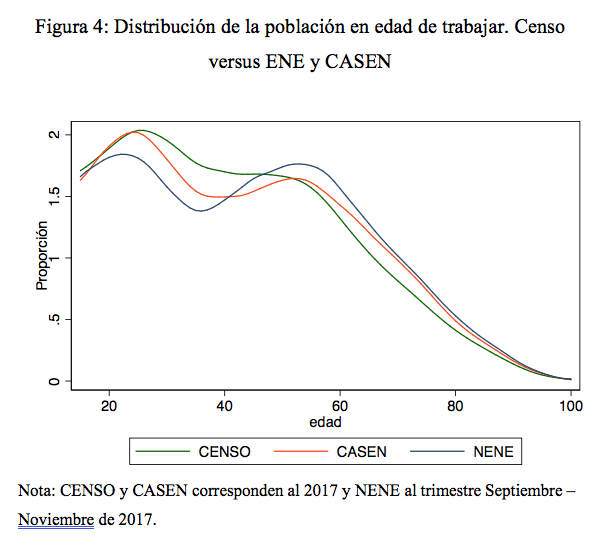

El rompecabezas de las cifras de empleo
Publicado en la Revista Observatorio Económico de la Facultad de Economía y Negocios de la Universidad Alberto Hurtado
A fines del año pasado estalló una fuerte controversia sobre la calidad de la Encuesta Nacional de Empleo (ENE) y su confiabilidad para predecir la evolución y crecimiento del empleo asalariado en Chile. Se detectaron discrepancias en diversas variables. Por ejemplo, según la Encuesta de Empleo entre septiembre y noviembre del año 2018 el número de empleados asalariados creció en 42.149 personas, mientras que según los datos de los cotizantes del sistema de pensiones1, en este mismo período la cantidad total de cotizantes aumentó en aproximadamente 96.5002. Inmediatamente luego de esta notica se sucedieron diversas entrevistas y/o artículos en los que se sugería la necesidad de reformular el marco muestral de la ENE (marco muestral que se usa también para elaborar otras encuestas), ya que su desactualización podría ser la principal causa en la inconsistencia de las cifras.
En palabras simples, un marco muestral es el listado de todos los posibles sujetos o unidades existentes para una cierta población sobre la que se desea hacer algún estudio. Por esto, si se está diseñando una muestra de empresas, el marco muestral debiera estar conformado por todas las empresas existentes en el país, mientras que, en el caso de una encuesta de hogares, el marco muestral debiera estar conformado por todas las viviendas existentes en el país. En el caso de nuestro país el marco muestral usado en las encuestas sociales y de empleo es un catastro de viviendas. Hasta noviembre del año 2018, el marco muestral de la ENE era un marco muestral principalmente basado en información del Censo 2002 que había sufrido modificaciones regulares hasta el año 2008 y una actualización puntual en el año 2014. El mismo Instituto Nacional de Estadísticas (INE) reporta en un documento metodológico3 de diciembre 2018 que este marco presenta falencias de subcobertura de ciertos segmentos de población objetivo al existir manzanas excluidas (manzanas que entre el marco antiguo y el potencial nuevo marco muestral han cambiado su estructura). En particular en el caso de la ENE, la muestra tendría una subrepresentación de población joven y de población migrante debido a que esta población tiene una sobrepresentación en manzanas que están excluidas del marco muestral actual4. El Banco Central, en su Informe de Política Monetaria de diciembre de 2018, refuerza este argumento indicando que el fenómeno migratorio es un cambio exógeno en la población y que en general las encuestas no tienen la capacidad para reflejar este tipo de cambios sin la modificación de su marco muestral.
No es claro sin embargo que el marco muestral en si sea la única fuente de discrepancia entre estadísticas administrativas y las cifras de la ENE. Tal como se observa en la Figura 1, hay discrepancias que han ido en aumento entre el número de cotizantes reportados por la ENE y los datos administrativos, pero la ENE presenta un subreporte mucho más pronunciado que la Encuesta de Caracterización Socioeconómica (CASEN), esto a pesar de que ambas encuestas comparten el mismo marco muestral (casi 10% en la ENE versus un 3% en CASEN). Al distinguir por género, para el trimestre septiembre-noviembre del año 2017, la brecha entre lo reportado por la ENE y los datos administrativos fue 11% para las mujeres y 8% para los hombres. Las brechas con CASEN son sustancialmente más bajas: 2% y 3.7%, respectivamente. Estos datos indican que es difícil sostener la hipótesis de que la obsolescencia del marco muestral sea la única causa del desacople de las series de cotizantes ya que, si ésta fuera la principal causa, se debieran observar brechas similares también entre los datos administrativos y los de la CASEN.
Al hacer este mismo análisis por tramos de edad y regiones, se observa que las mayores discrepancias de la ENE son para los cotizantes jóvenes (ENE reporta un 20% menos de cotizantes en el tramo 20-30 y casi 30% menor en el tramo 31- 40, ver Figura 3) y en la zona norte y zona central (subreporte) y las regiones más australes (sobrereporte). En la zona norte tanto CASEN como ENE reportan un menor número de cotizantes, con series temporales casi superpuestas. En esta zona es más plausible de sostener que el problema de desacople entre las series administrativas y las provenientes de las encuestas pudiera deberse fundamentalmente al marzo muestral (regiones donde el censo detectó tasas de inmigración por encima del promedio nacional).
La potencial subcobertura del marco muestral de CASEN y ENE puede también evaluarse usando datos del Censo 2017. La Figura 3 muestra la distribución etaria de la población en edad de trabajar. Se puede observar que efectivamente hay una menor cobertura de población joven, con un desacople mucho más pronunciado de la ENE. A una similar conclusión se llega analizando otro indicador, la fracción de población que declara no haber nacido en el territorio nacional. La encuesta CASEN arroja una cifra muy similar la cifra recogida con el Censo 2017 (en torno al 4%), mientras que la ENE reporta una cifra claramente inferior (en torno a 1.8%).
Es importante, entonces, estudiar con detenimiento qué características del método de muestreo de la ENE y/o la estructura del cuestionario pudieran estar generando estos sesgos. Parte puede ser desactualización del marco muestral, pero las diferencias sistemáticas entre ENE y CASEN pueden estar relacionadas con estos otros aspectos. En particular, Muñoz (2015)5 observa dos diferencias importantes en la manera de aplicar el cuestionario de ENE y CASEN que pueden afectar la calidad de los datos. En primer lugar, las encuestas difieren en cómo definen el informantes proxy. En particular en el caso de la ENE, cuyo informante es cualquier miembro del hogar mayor de 15 años, el obtener respuestas confiables para caracterizar el empleo puede ser complejo. En el caso de CASEN el informante es el jefe de hogar y si éste no estuviera presente un mayor de 18 años. Esto podría estar explicando las diferencias sistemáticas en las series de empleo que dan ambas encuestas. En segundo lugar, ENE exige la entrega del cuestionario completo; en ausencia de un cuestionario completo éste se devuelve al encuestador o se descarta su uso. Ante el uso de informantes proxy es conveniente permitir la respuesta parcial, ya que en caso contrario el informante se ve forzado a responder aun cuando desconoce. Es mejor tener un “No sabe / No contesta” certero que una respuesta errónea. En el caso de CASEN es más común encontrar respuestas parciales cuando un sujeto responde por otro que cuando el sujeto responde por sí mismo (Muñoz, 2015).
En suma, el disímil desempeño de CASEN y ENE en la estimación del nivel de cotizantes y su evolución desestima la hipótesis de que el desacople de las cifras de ENE y datos administrativos sea sólo producto de la desactualización del marco muestral. Por tanto, en la discusión de qué se debe revisar para mejorar los datos de empleo de la ENE, es preciso incluir otros aspectos además del marco muestral desactualizado que podrían estar dando lugar a estas diferencias.




Footnotes
Datos extraídos de la Superintendencia de Pensiones↩︎
En un artículo periodístico se daba cuenta de un aumento mayor en el número de cotizantes según datos administrativos para igual período (link).↩︎
Ver presentación a Panel de Expertos el 21 de Diciembre 2018 (link).↩︎
Muñoz Iglesias, Patricia (2015). “Impacto del uso de informantes proxy en la Encuesta Nacional del Empleo y la Encuesta de Caracterización Socioeconómica Nacional 2015”, Memoria para optar al título de Socióloga, Facultad de Ciencias Sociales, Escuela de Sociología, Universidad de Chile.↩︎